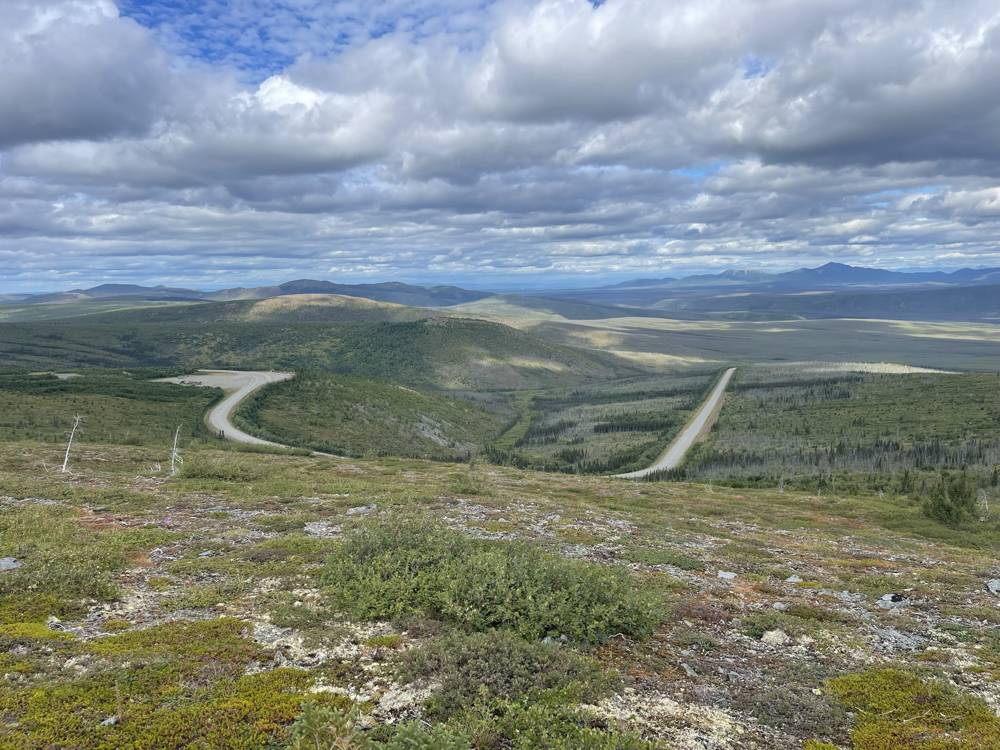

Gallery
Selected photographs from botanical fieldwork and studies of plant diversity. Select an image to view it at full size.



Selected photographs from botanical fieldwork and studies of plant diversity. Select an image to view it at full size.
